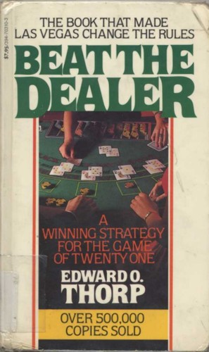

爱德华·索普（Edward O. Thorp）是数学家、量化金融先驱，先后执教于麻省理工学院（MIT）与加州大学欧文分校（UC Irvine）。他在职业早期对赌场游戏产生了浓厚的学术兴趣，发现二十一点（blackjack）的规则中存在数学上可利用的信息优势。1962年，《击败庄家》（Beat the Dealer）初版问世，1966年修订再版。这本书以严格的概率计算证明了"算牌"（card counting）策略的可行性——通过追踪已发出牌面的构成来动态调整下注金额，玩家可以将原本有利于庄家的概率关系翻转。此书出版后迅速登上《纽约时报》畅销书榜，销量逾百万册，赌场业为此被迫修改规则甚至将索普列入黑名单，其影响之大令人始料未及。
全书的核心贡献不仅在于提供了一套具体的算牌技术，更在于它所示范的思维方式：对一个看似由运气主宰的游戏，用系统化的分析重新发现其中隐藏的确定性边际优势（edge）。索普详细讲解了"十点计数法"（ten-count system）和后来发展出的更简化版本，说明了在不同的牌面状态下如何调整基本策略（basic strategy）以及如何做好资金管理。书中同时揭露了索普亲历的赌场出千行为，以及在实际操作中如何应对赌场的反制措施。索普将严谨的数学带入了一个从未被认真对待过的领域，证明了在有限信息游戏中，勤于计算的人可以系统性地获得优势。
《击败庄家》对量化金融界的影响远超赌博本身。费舍尔·布莱克（Fischer Black）与迈伦·斯科尔斯（Myron Scholes）在发展著名的期权定价公式时，明确受到索普关于权证定价早期研究的启发；斯科尔斯其后凭相关成果获得诺贝尔经济学奖。沃伦·巴菲特（Warren Buffett）与索普有过直接交流，两人均对彼此的方法论表示尊重；巴菲特曾公开谈及索普的工作对理解市场效率边界的启示。索普后来将算牌的核心逻辑迁移至对冲基金管理，其普林斯顿-纽波特合伙公司（Princeton-Newport Partners）在1969年至1988年间几乎没有出现过亏损的年份。
《击败庄家》对今天的投资者的意义，不在于教人打牌，而在于它所呈现的认知框架：即便在一个充满随机性的环境中，只要存在信息优势和纪律化的执行，就有可能构建出正期望值的策略。这与价值投资的底层逻辑一脉相通——寻找市场对某种资产的定价系统性偏离其内在价值的情况，然后耐心等待概率的力量发挥作用。